In Klampenborg you will find the oldest amusement park in the world. Here is something for anyone -
regardless of whether you like wild rollercoasters, slot machines or enjoy a nice dinner.
Bakken has a project to fight loneliness. It focuses on young people and helps them to get out of a
downward spiral through many planned events.
Bakken is placed in Dyrehaven and in 1583 a young woman named Kirsten Piil found a “source” with
healing powers. The “source” was extra strong around Sankt Hans (a holiday every year the 24 of
june) which attracted many sick citizens to come to the place wanting healing. Over the years a
market called The source market was created because of this.
There is free entrance. You can buy a tour band for 299 kr. at the location. With the tourband you
get 10 times access to each of the rides. You can save 50 kr. on a tour band through Bakkens
website: Buy your tour band here:
(be aware that you have to order a week ahead in
order to save 50 kr.)
The rides open at 14 pm till 22 pm Monday till Friday. Saturday and Sunday the rides open at 11 am.
"Historie - Dyrehaven tilgået 10/5 - 2022
https://naturstyrelsen.dk/naturoplevelser/naturguider/jaegersborg-dyrehave/historie/"
 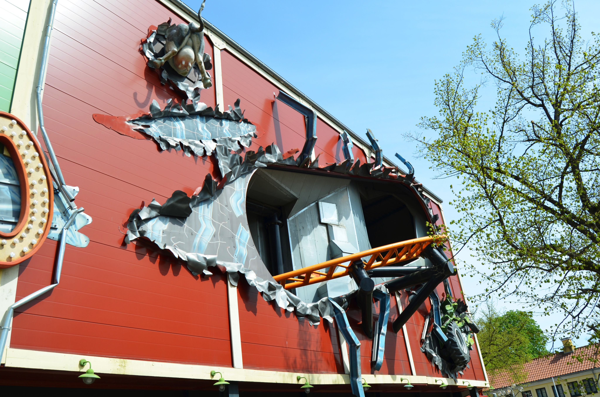
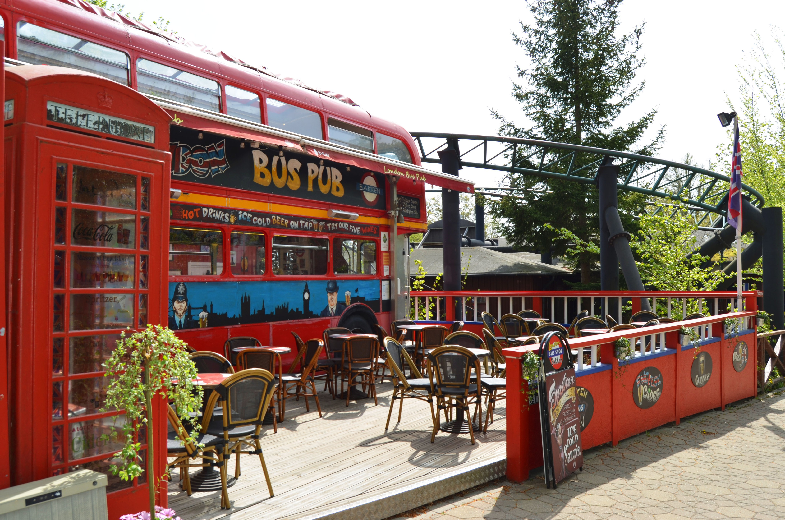
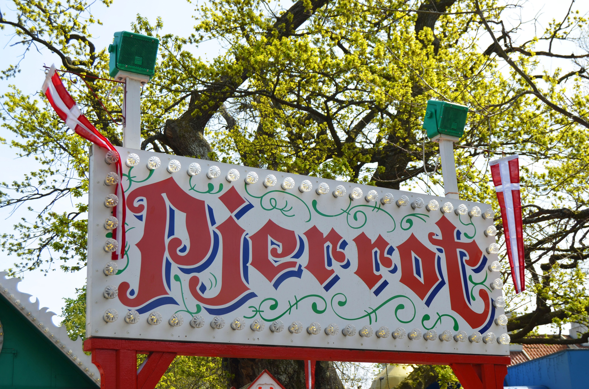
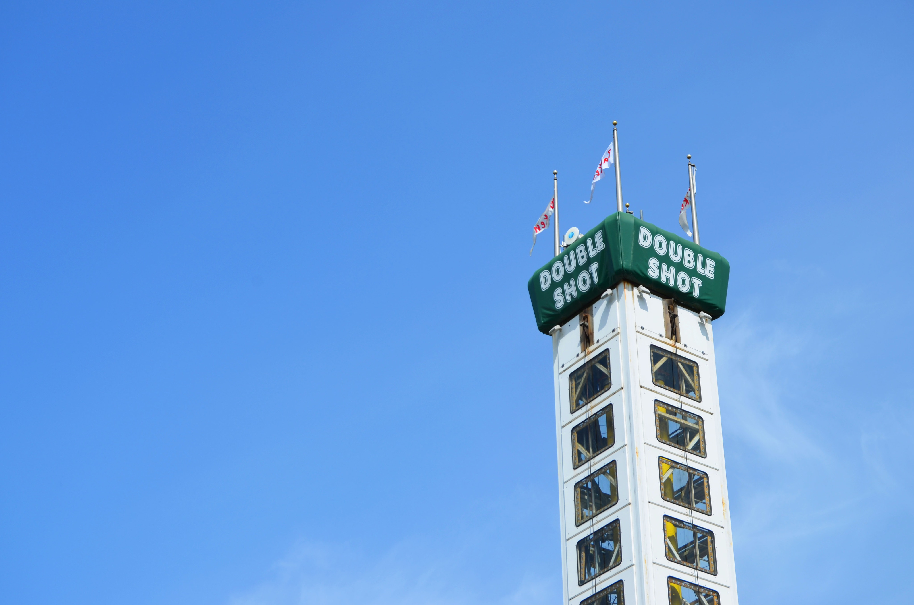
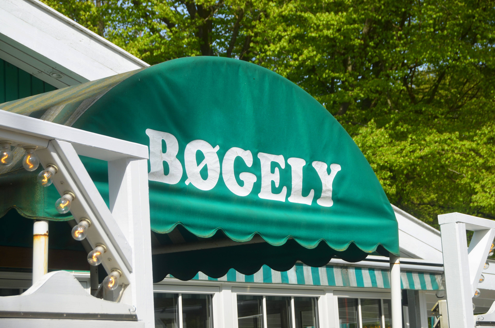
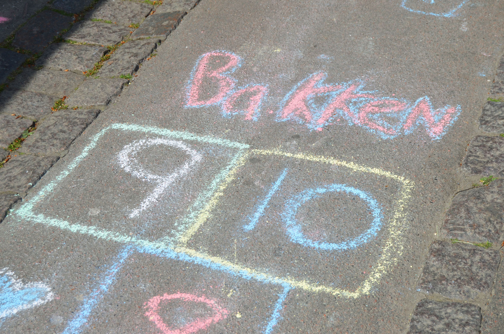
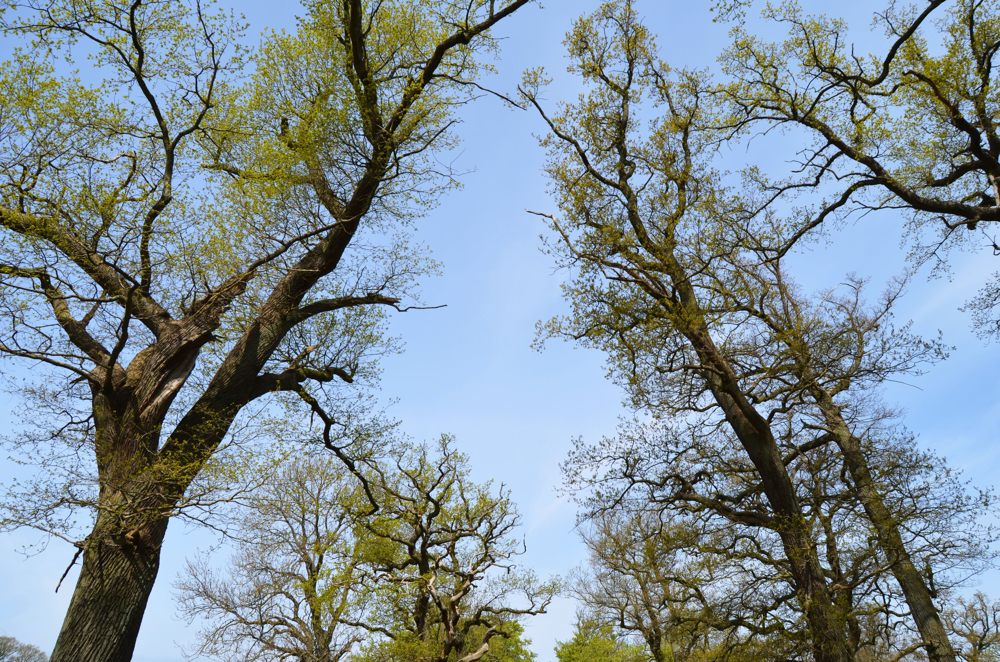
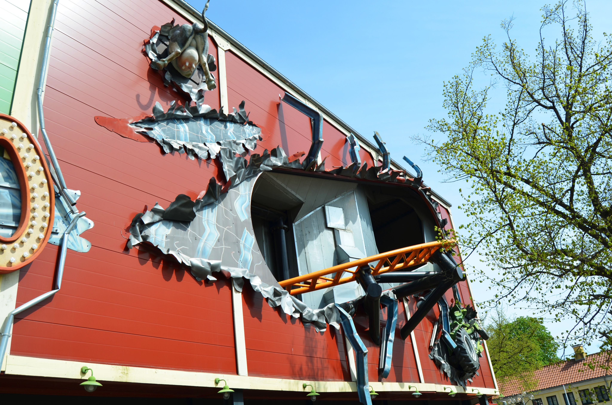
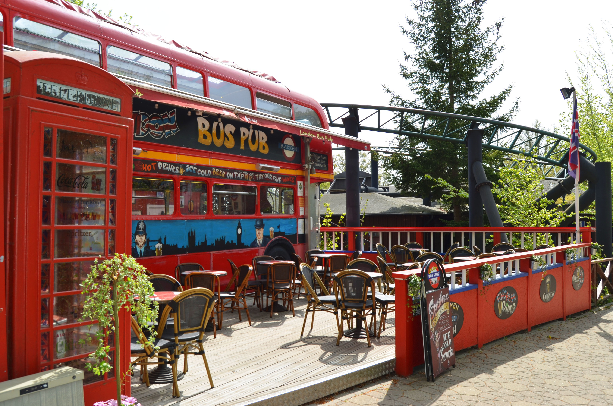
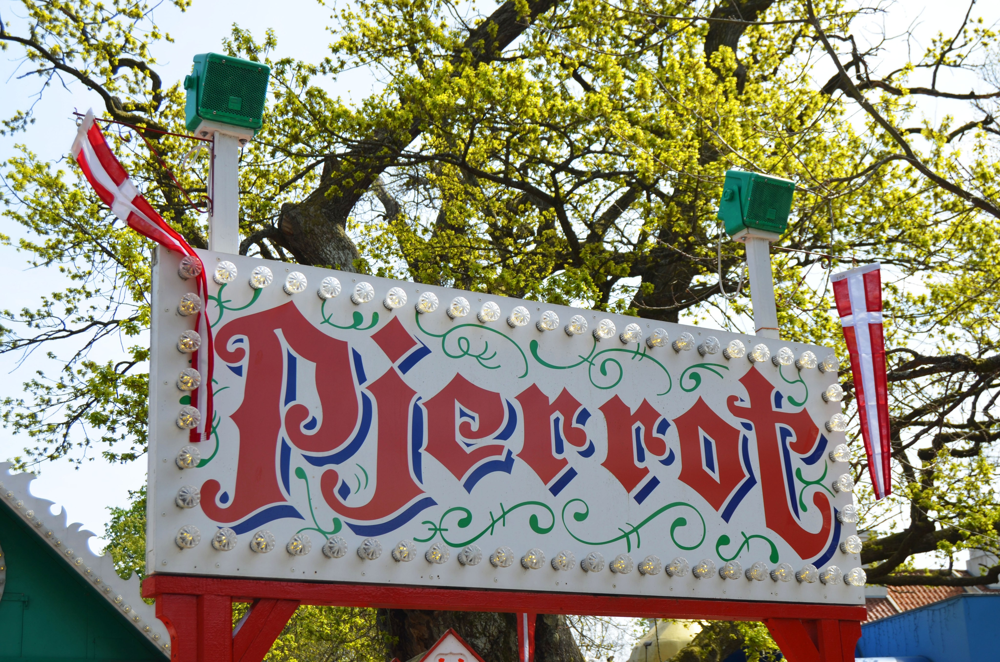
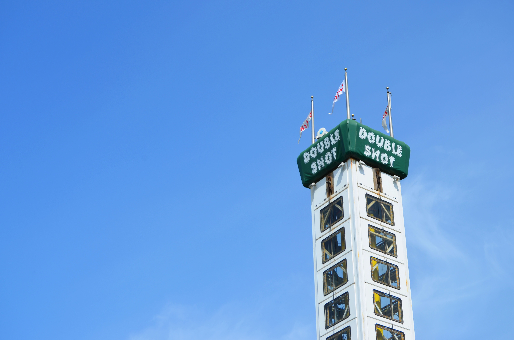
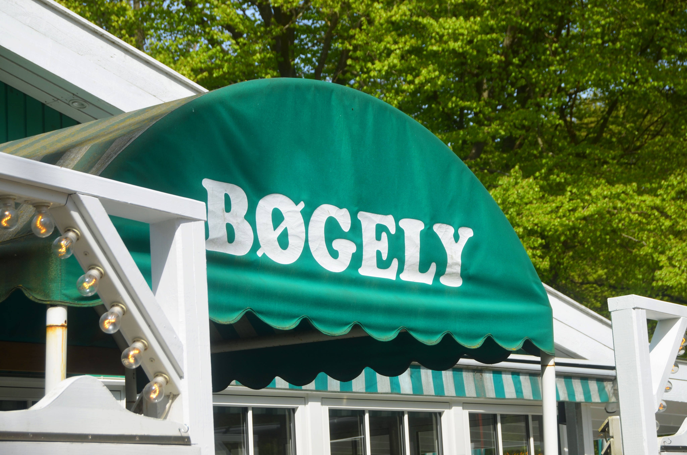
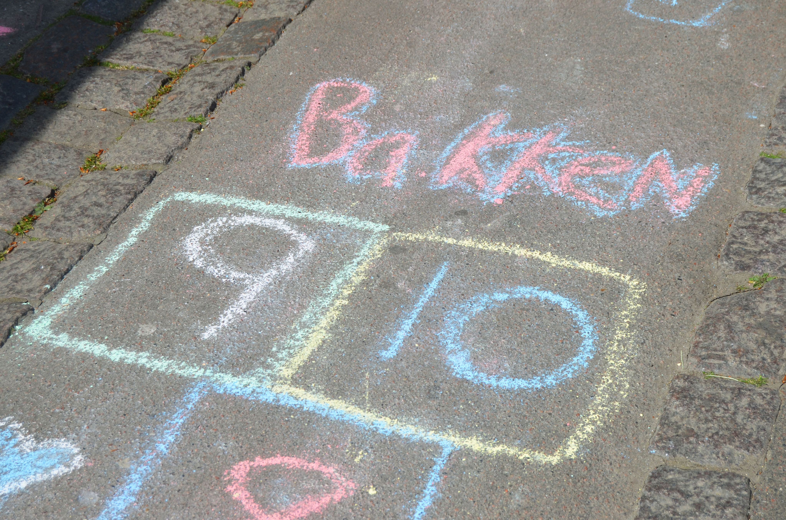
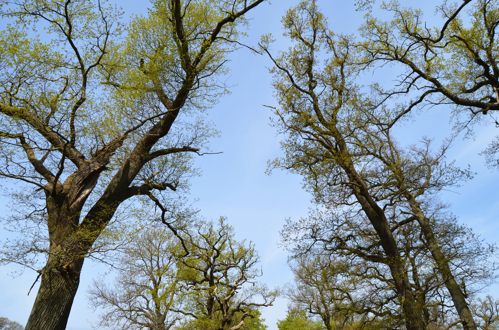
Click on the map for navigation: